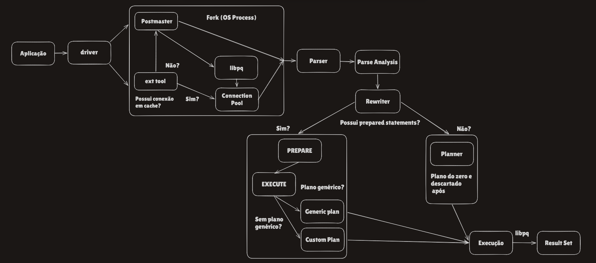

Da Query ao Result Set: PostgreSQL
Anteriormente passamos pela arquitetura do SQL Server: driver, parser, binder, plan cache, optimizer... Agora, aproveitando o embalo, falaremos do PostgreSQL — Além de documentarmos mais um sistema de gerenciamento de banco de dados, usaremos o que foi capitado do SQL Server e reaproveitar aqui, preenchendo as lacunas de conhecimento com aquilo que difere e buscando entender do que se trata.
Esse artigo cobre da conexão até a execução da query — a parte de "arquitetura e especificação" do motor. Locks, MVCC e VACUUM ficam de fora desse artigo: Pois são assuntos longos e o foco aqui é entender como o motor funciona, como a query entra e sai, sem grandes especificações, afinal, os assuntos acima citados são extensos e merecem um artigo próprio, afinal entram, ao meu ver, no contexto de gerenciamento e fogem da arquitetura principal.
No SQL Server, a sua aplicação fala com um driver que mantém um pool de conexões dentro do próprio client. No PostgreSQL a lógica de "quem atende a conexão" é outra: Não existe pooling nativo dentro do driver. Toda conexão nova é recebida pelo Postmaster, o processo pai que fica escutando a porta 5432 (default), e ele responde criando um fork — um processo novo do sistema operacional, dedicado exclusivamente àquela sessão, do início ao fim dela.
Se você não tem nenhuma ferramenta externa de pooling (PgBouncer, pgpool, ou pooling no nível da aplicação), toda conexão nova paga o custo de um fork. Se você tem, a ferramenta segura um conjunto de conexões já abertas com o Postgres e entrega uma delas pra sua aplicação sem passar pelo Postmaster de novo — mas se o pool estiver sem conexão livre no momento, ele ainda vai pedir um fork novo. Pooling reduz a frequência do fork, não elimina ele. Mas entre sempre pagar e, dependendo de uma boa configuração, pagar bem menos, o ideal sempre será o uso da ferramenta externa.
Fato curioso: essa é a diferença arquitetural mais fundamental entre os dois bancos, e ela se propaga pra tudo que vem depois. SQL Server usa threads dentro de um processo só, coordenadas pelo SQLOS, o próprio scheduler do motor. PostgreSQL usa um processo do SO por conexão. Isso explica por que "muitas conexões simultâneas" é um problema de escala bem mais sério no Postgres — cada conexão ociosa ainda consome memória de processo do SO, não só uma thread leve — e por que ferramentas de pooling externo são consideradas infraestrutura obrigatória em produção, não uma opção.
A partir daqui a query já chegou fisicamente ao backend process dedicado a ela. É aqui que a arquitetura interna do PostgreSQL assume.
Passada a conexão, entramos no motor de verdade: o Parser
Assim como no SQL Server, a primeira etapa é uma checagem puramente sintática. O Parser do Postgres não sabe se a tabela existe, não sabe se a coluna existe — só verifica se o SQL está escrito de um jeito que faz sentido gramaticalmente, seguindo a gramática formal do dialeto do sistema em questão.
Se você já recebeu um erro do tipo syntax error at or near..., foi o parser reclamando. Mesma lógica do SQL Server: fase mais barata, mais rápida, e erro de sintaxe nunca é problema de performance.
Depois da sintaxe, vem a checagem de verdade: Parse Analysis
Essa etapa é o equivalente direto do Binder/Algebrizer do SQL Server. Ela resolve nomes — a tabela public.pedidos existe? a coluna cliente_id existe nela? — e tipos: dá pra comparar essa coluna integer com esse parâmetro text? É aqui que aparecem erros como: relation "pedidos" does not exist ou column "cliente_id" does not exist.
Fato curioso: conversões de tipo implícitas acontecem aqui, com a mesma consequência que no SQL Server — perda de SARGability. UmWHERE coluna::text = $1pode empurrar o planner pra um Seq Scan onde um Index Scan seria possível, exatamente pelo mesmo motivo que umCONVERT()mal colocado derruba um index seek no SQL Server. A raiz do problema é idêntica nos dois motores: o índice é construído sobre o tipo original da coluna, e uma conversão no meio do caminho impede o otimizador de casar a expressão do WHERE com esse índice.
Uma etapa nova (para DBA's SQL Server): o Rewriter
Depois da Parse Analysis, o Postgres passa por uma etapa própria chamada Rewriter, que consulta as regras (rules) armazenadas no catálogo do sistema. A aplicação mais comum disso, e a que você vai encontrar no dia a dia, é a expansão de views: quando sua query referencia uma view, é o Rewriter que substitui essa referência pela query real por trás dela, antes de qualquer coisa ser planejada. O SQL Server resolve views de um jeito mais direto dentro do próprio binder/otimizador; o Postgres trata isso como um estágio de reescrita de query separado e explícito.
Antes de pensar, o motor decide: você tem um PREPARE?
Aqui mora a maior diferença comportamental entre os dois bancos, que apesar de sua complexidade, funciona bem: o PostgreSQL não tem plan cache automático. Não existe um cache global guardando planos de queries que chegaram pelo protocolo simples. Toda query "solta" — sem PREPARE — é parseada, reescrita, planejada e executada do zero, e o plano é descartado logo em seguida. Não existe soft parse aqui; sem PREPARE, é sempre hard parse (Termos retirados do Oracle, mas em uma linguagem mais familiar, sem PREPARE ele recompila, SEMPRE!).
Cache de plano só entra em cena se você usa prepared statements — via PREPARE nome AS ... explícito, ou via protocolo estendido do driver (o JDBC, por exemplo, tem um prepareThreshold configurável; drivers em Node/Python normalmente expõem algo parecido). E mesmo aí, o comportamento é mais esperto que um cache raso:
PREPARE não gera um plano. Ele guarda a query já parseada e reescrita, mas o planejamento em si só acontece quando você chama EXECUTE. Da primeira até a quinta execução, o Postgres gera um plano custom a cada chamada — replaneja usando os valores reais dos parâmetros, do mesmo jeito que faria numa query solta — e vai calculando o custo médio estimado desses planos. Na sexta execução, ele gera um plano genérico (sem conhecer valores futuros de parâmetro) e compara o custo estimado dele com a média dos planos custom. Se o genérico não for muito pior, o Postgres passa a reusar esse plano genérico dali em diante — sem replanejar. Se for bem pior, continua gerando plano custom pra sempre.
Fato curioso: isso torna o parameter sniffing do Postgres adaptativo, ao contrário do SQL Server, onde o plano é compilado uma vez (baseado nos valores da primeira execução) e fica preso até uma recompilação forçada. No Postgres, se a coluna tem distribuição de valores muito desigual — um flag que é 99% 'Y' e 1% 'N', por exemplo — o plano genérico pode ser dramaticamente pior que o custom, porque ele não sabe qual valor vai vir. Existe até um caso relatado na lista de discussão oficial do Postgres de um plano genérico rodando 158 mil vezes mais lento que o custom equivalente. Pra esses casos, dá pra forçar o comportamento comSET plan_cache_mode = 'force_custom_plan'(ouforce_generic_plan, se for o contrário que você quer).
Pra ver esse comportamento acontecendo:
-- Ver os prepared statements da sessão atual: quantas vezes cada um
-- rodou como plano custom vs. genérico
SELECT name,
statement,
generic_plans,
custom_plans,
parameter_types
FROM pg_prepared_statements;
-- Forçar sempre plano custom numa sessão específica — útil pra debugar
-- um caso onde o plano genérico parece ter ficado ruim
SET plan_cache_mode = 'force_custom_plan';
-- Conferir, via EXPLAIN, se a execução atual está usando plano
-- genérico (aparece com $1, $2...) ou custom (valores literais substituídos)
EXPLAIN EXECUTE nome_do_prepared(valor);Sem PREPARE ou depois da decisão: entra o Planner
O Planner do Postgres é conceitualmente o mesmo tipo de peça que o Query Optimizer do SQL Server: ele não busca o plano perfeito, busca um plano bom o suficiente, rápido o suficiente. O processo segue a mesma lógica de fundo — simplificação da query, checagem de caso trivial (uma busca direta por chave primária não precisa comparar alternativas), e, se não for trivial, geração de planos candidatos com custo estimado via estatísticas.
As estatísticas usadas aqui vêm do catálogo pg_statistic (exposto de forma legível via a view pg_stats), e quem popula isso é o ANALYZE — o equivalente direto do UPDATE STATISTICS do SQL Server. Estatística desatualizada tem exatamente a mesma consequência nos dois bancos: estimativa de linhas errada, escolha de join errada, plano ruim.
Fato curioso: pra queries com muitas tabelas envolvidas em joins, o Postgres troca a busca exaustiva por candidatos por uma heurística chamada GEQO (Genetic Query Optimizer) — um algoritmo genético mesmo, que evolui populações de planos candidatos em vez de comparar todas as combinações possíveis. O SQL Server não tem nada parecido; ele sempre faz busca determinística, só limitada por tempo/custo de otimização.
Com o plano decidido — custom, genérico, ou recém-planejado sem PREPARE — a query segue pro Executor:
Roda a árvore do plano de baixo pra cima, puxando linhas conforme necessário, do mesmo jeito conceitual do SQL Server. O resultado também não é montado inteiro no servidor: ele é transmitido em stream pelo protocolo libpq, linha por linha, à medida que é produzido — o mesmo comportamento do TDS no SQL Server, incluindo a mesma armadilha de diagnóstico: se o client processa devagar, o Postgres fica esperando ele consumir, o que aparece como wait ClientWrite — o equivalente ao ASYNC_NETWORK_IO, e igualmente fácil de confundir com "problema de rede" quando não é.
O que acontece dentro dessa execução — como o Postgres controla concorrência sem os locks pessimistas do SQL Server, por que praticamente não existe lock escalation aqui, e por que VACUUM é rotina essencial — é assunto grande o suficiente pra ganhar um novo artigo, com diagrama próprio.
Tenha essa lista em mente — é o que se deve consultar quando quero entender o que está acontecendo entre a query sair da aplicação e o plano ficar pronto:
- Prepared statements ativos e uso custom vs. genérico: pg_prepared_statements
- Conexões ativas e o processo backend de cada uma: pg_stat_activity
- Forçar plano custom ou genérico manualmente: plan_cache_mode
- Estatísticas usadas pelo planner: pg_stats, e ANALYZE pra atualizar
- Queries mais executadas e tempo gasto em parse/planejamento: pg_stat_statements (com track_planning ligado)
- Ver o plano real escolhido pra um prepared statement: EXPLAIN EXECUTE nome(valores)
Assim como no artigo do SQL Server, a regra principal é: antes de sair mexendo em índice, entenda por qual caminho a query passou. No Postgres esse caminho tem detalhes a mais que diferem bem, porém vão ajudar a entender o porque o banco já possui uma boa query, plano, índice e ainda sim, de vez em quando fica lento.
Observe o mapa, ele vai ajudar a fixar visualmente o que foi tratado:

Para os próximos artigos falaremos de mais assuntos com PostgreSQL, como: MVCC, lock manager, VACUUM, etc — parte que há diversas diferenças em relação ao SQL Server. Obrigado por ler até aqui e bons estudos!